import hashlib
from itertools import permutations
import matplotlib.pyplot as plt
import numpy as np
BASE = "https://raw.githubusercontent.com/daniprec/Python-Course/main/data/ghost_photos"
def show(image):
"""Display grayscale or colour arrays."""
if image.ndim == 2:
plt.imshow(image, cmap="gray", vmin=0, vmax=1)
else:
plt.imshow(np.clip(image, 0, 1))
plt.axis("off")
plt.show()
_KEYS = {
1: "acba8dd74b724348",
2: "f5ca38f748a1d6ea",
3: "9ae2bdd7beedc2e7",
4: "d4735e3a265e16ee",
5: "865736a1c30a82dc",
"case": "2eb2158e4711ef9f",
}
def check(photo, key):
digest = hashlib.sha256(str(key).strip().upper().encode()).hexdigest()[:16]
if digest != _KEYS[photo]:
print(f"Wrong key for photo {photo}. Keep investigating...")
elif photo == "case":
print("Correct case number! The ghost hunt is solved.")
else:
print(f"Correct key! Photo {photo} is recovered.")Loading and Saving NumPy Data — Guided Solutions
Module 3: NumPy
Setup
Photo 1 — shattered into 9 fragments
First, load the broken photo and look at the full image.
shattered = np.loadtxt(f"{BASE}/photo_1/shattered.txt")
print("shape:", shattered.shape)
show(shattered)shape: (300, 300)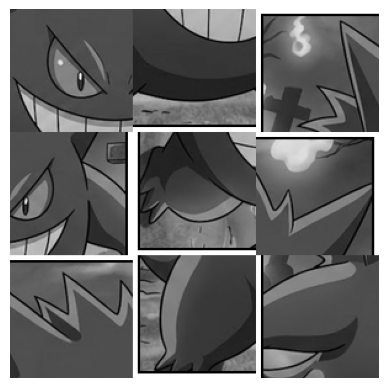
Now split it in two stages. First into 3 big rows. The vsplit() function takes a 2D array and splits it vertically into equal pieces. The return value is a list of arrays, one for each piece.
rows = np.vsplit(shattered, 3)
print("type returned by vsplit:", type(rows))
print("length:", len(rows))
print("shape of first piece:", rows[0].shape)type returned by vsplit: <class 'list'>
length: 3
shape of first piece: (100, 300)Then, we split each row into 3 fragments. We use hsplit() to split horizontally. For each row, we get a list of 3 pieces, so the total number of fragments is 9.
fragments = []
for i, row in enumerate(rows):
pieces = np.hsplit(row, 3)
print(f"row {i} -> {len(pieces)} pieces")
fragments.extend(pieces)
print("total fragments:", len(fragments))
print("each fragment shape:", fragments[0].shape)row 0 -> 3 pieces
row 1 -> 3 pieces
row 2 -> 3 pieces
total fragments: 9
each fragment shape: (100, 100)Label the fragments A to I in the order we found them and inspect them one by one.
letters = "ABCDEFGHI"
for letter, fragment in zip(letters, fragments):
print(letter)
show(fragment)A
B
C
D
E
F
G
H
I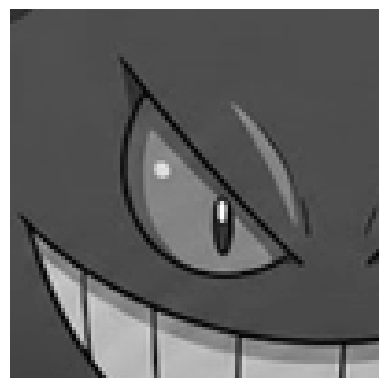
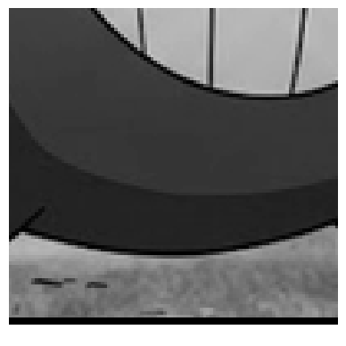
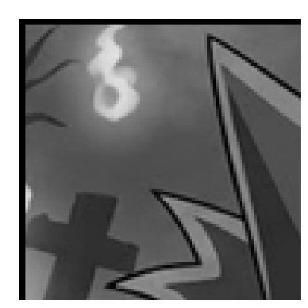
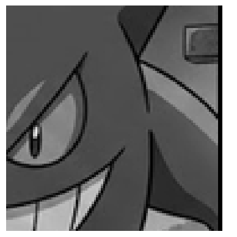
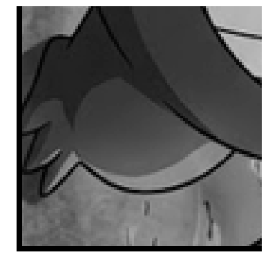
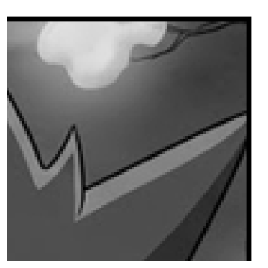
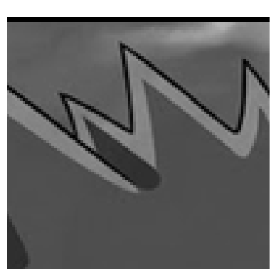
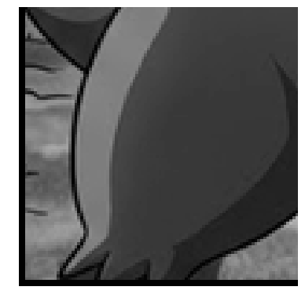
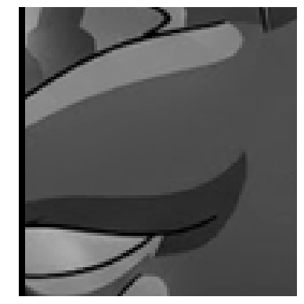
The border tells us the order of the fragments in the original picture:
key_1 = "CGFIADHBE"
check(1, key_1)
order = [letters.index(letter) for letter in key_1]
photo_1 = np.vstack([
np.hstack([fragments[i] for i in order[r * 3:(r + 1) * 3]])
for r in range(3)
])
show(photo_1)Correct key! Photo 1 is recovered.A nice thing to notice: vsplit() and hsplit() give lists of arrays, and vstack() / hstack() rebuild the full image from those lists.
Photo 2 — flattened, swapped, dimmed, mirrored
The file is one long column of numbers. Start by loading it and checking how many values we have.
frozen = np.loadtxt(f"{BASE}/photo_2/frozen.txt")
print("shape:", frozen.shape)
print("min / max:", frozen.min(), frozen.max())shape: (90000,)
min / max: 0.31 0.36A photo has \(300 \times 300 = 90000\) values, so reshape it back to a square.
stored = frozen.reshape(300, 300)
print("reshaped shape:", stored.shape)
show(stored)reshaped shape: (300, 300)The image is very faint, so it looks almost flat. First swap the two halves.
left, right = np.hsplit(stored, 2)
print("left shape:", left.shape, "right shape:", right.shape)
stored = np.hstack((right, left))
show(stored)left shape: (300, 150) right shape: (300, 150)Now stretch the values back to the interval \([0, 1]\). We apply a normalization formula to each pixel value: subtract the minimum and divide by the range.
:::{ .callout-tip, collapse=“true”} ## Why normalize? We have an array \(x\) with values in the range \([a, b]\). Our goal is to map that range to \([0, 1]\), in a new array \(x''\).
First lets make sure the minimum value is 0. We can do that by subtracting the minimum from every value: \(x' = x - a\). Our new range is \([0, b - a]\).
Now, if we want the maximum value to be 1, we can divide every value by the new maximum: \(x'' = x' / (b - a)\). Our final range is \([0, 1]\).
In short, the normalization formula is:
\[ x'' = \frac{x - a}{b - a} \] :::
mn = stored.min()
mx = stored.max()
print("stored min / max:", mn, mx)
print("range:", mx - mn)
stretched = (stored - mn) / (mx - mn)
show(stretched)stored min / max: 0.31 0.36
range: 0.04999999999999999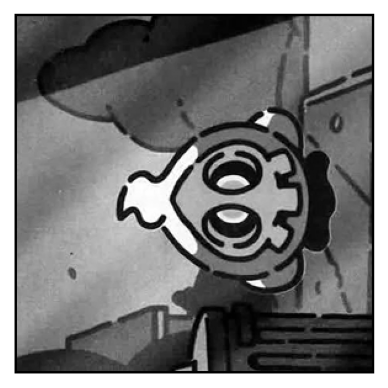
The image is mirrored across the diagonal, so transpose it.
photo_2 = stretched.T
show(photo_2)The key is the contrast reduction factor. The original range was 1.
key_2 = round(1 / (mx - mn))
print("photo 2 key:", key_2)
check(2, key_2)photo 2 key: 20
Correct key! Photo 2 is recovered.Photo 3 — dark horizontal bands
Load the CSV file with semicolon separators.
banded = np.loadtxt(f"{BASE}/photo_3/banded.csv", delimiter=";")
print("shape:", banded.shape)
show(banded)shape: (300, 300)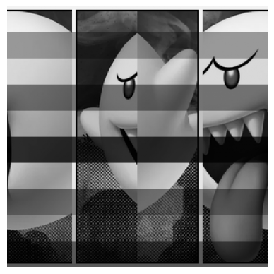
Cut it into 4 vertical strips.
strips = np.hsplit(banded, 4)
print("type:", type(strips))
print("length:", len(strips))
print("each strip shape:", strips[0].shape)
for i, strip in enumerate(strips):
print("strip", i)
show(strip)type: <class 'list'>
length: 4
each strip shape: (300, 75)
strip 0
strip 1
strip 2
strip 3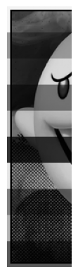
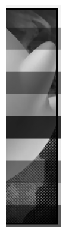
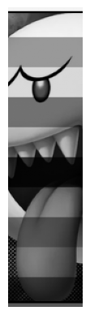
The black line on the border tells us the order. Try the candidate layouts.
candidate_1 = np.hstack((strips[1], strips[0], strips[3], strips[2]))
candidate_2 = np.hstack((strips[1], strips[3], strips[0], strips[2]))
print("candidate 1")
show(candidate_1)
print("candidate 2")
show(candidate_2)candidate 1
candidate 2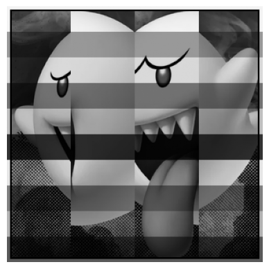
The second one is correct.
stored = candidate_2
show(stored)
The first column is the row-by-row gain, because the white frame should have been all ones.
gain = stored[:, 0]
print("gain shape:", gain.shape)
print("first 20 gains:", gain[:20])
print("smallest gain at row:", np.argmin(gain))gain shape: (300,)
first 20 gains: [0.95 0.95 0.95 0.95 0.95 0.95 0.95 0.95 0.95 0.95 0.95 0.95 0.95 0.95
0.95 0.95 0.95 0.95 0.95 0.95]
smallest gain at row: 150Broadcasting matters here. A 1D array divides columns, not rows.
print("wrong shape result: divides columns")
show(stored / gain)wrong shape result: divides columnsTurn the gains into a column so each row gets divided by its own gain.
gain_col = gain.reshape(-1, 1)
print("gain_col shape:", gain_col.shape)
photo_3 = stored / gain_col
show(photo_3)
key_3 = int(np.argmin(gain))
check(3, key_3)gain_col shape: (300, 1)
Correct key! Photo 3 is recovered.Photo 4 — a cursed lens and shuffled strips
Load the photo and split it into 5 horizontal strips.
cursed = np.loadtxt(f"{BASE}/photo_4/cursed.csv", delimiter=",")
print("shape:", cursed.shape)
show(cursed)
strips = np.vsplit(cursed, 5)
print("length:", len(strips))
print("strip shape:", strips[0].shape)shape: (300, 300)
length: 5
strip shape: (60, 300)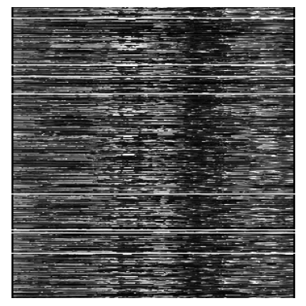
Each strip hides its number in the top-left pixel.
numbers = np.array([strip[0, 0] for strip in strips])
print("hidden numbers:", numbers)
order = np.argsort(numbers)
print("sorted strip order:", order)
stored = np.vstack([strips[i] for i in order])
show(stored)hidden numbers: [4. 1. 5. 3. 2.]
sorted strip order: [1 4 3 0 2]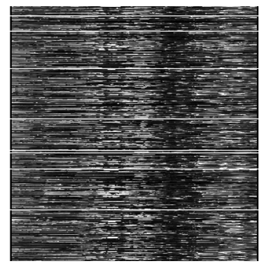
Now inspect the three candidate lenses.
lenses = {}
for k in range(1, 4):
L = np.loadtxt(f"{BASE}/photo_4/lens_{k}.csv", delimiter=",")
lenses[k] = L
print(f"lens {k}: det = {np.linalg.det(L):.1f}")lens 1: det = 0.0
lens 2: det = -1.0
lens 3: det = 0.0Only lens 2 has a nonzero determinant, so it is the only one we can invert.
key_4 = 2
check(4, key_4)
L = lenses[key_4]Correct key! Photo 4 is recovered.Here is the inverse via matrix multiplication.
photo_4 = np.linalg.inv(L) @ stored
show(photo_4)
Now compare that with doing the same thing row by row in a for loop. This is the same linear algebra, just expanded manually.
invL = np.linalg.inv(L)
manual = np.zeros_like(stored)
for i in range(invL.shape[0]):
row = np.zeros(stored.shape[1])
for j in range(invL.shape[1]):
row += invL[i, j] * stored[j]
manual[i] = row
print("manual and matrix product match:", np.allclose(manual, photo_4))
show(manual)manual and matrix product match: True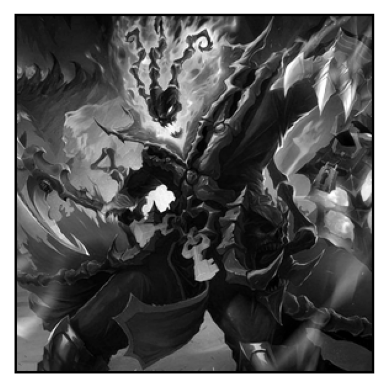
That loop is useful for understanding, but the matrix product is the clean NumPy version.
Photo 5 — colour channels, shuffled
Load the colour strip image and split it into 3 equal parts.
colour = np.loadtxt(f"{BASE}/photo_5/colour.txt")
print("shape:", colour.shape)
show(colour)
images = np.hsplit(colour, 3)
print("length:", len(images))
for i, image in enumerate(images, start=1):
print(f"image {i} shape:", image.shape)
show(image)shape: (300, 900)
length: 3
image 1 shape: (300, 300)
image 2 shape: (300, 300)
image 3 shape: (300, 300)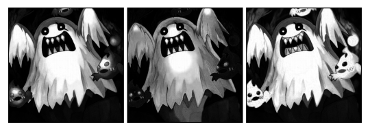
Take one ordering, stack the channels along a new axis, and undo the night-time squaring with a square root.
attempt = np.sqrt(np.stack((images[0], images[1], images[2]), axis=2))
print("attempt shape:", attempt.shape)
show(attempt)attempt shape: (300, 300, 3)
Try all 6 possible channel orders.
for order in permutations([1, 2, 3]):
print("order:", order)
trial = np.sqrt(np.stack((images[order[0] - 1], images[order[1] - 1], images[order[2] - 1]), axis=2))
show(trial)order: (1, 2, 3)
order: (1, 3, 2)
order: (2, 1, 3)
order: (2, 3, 1)
order: (3, 1, 2)
order: (3, 2, 1)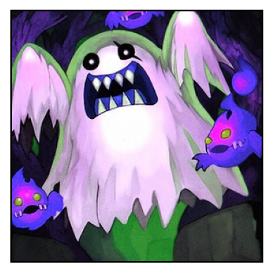
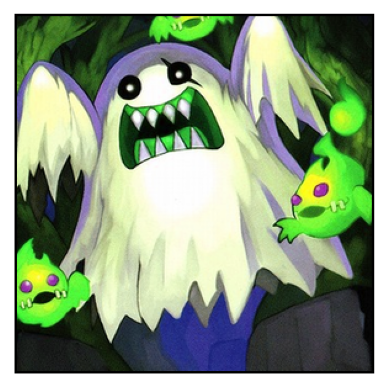
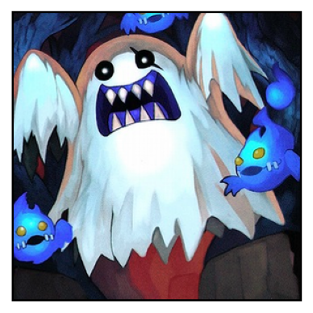
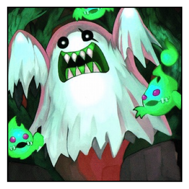

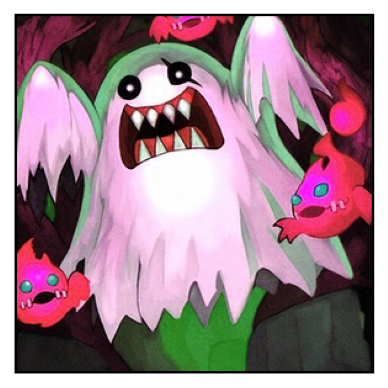
The orange flames identify the right order.
photo_5 = np.sqrt(np.stack((images[2], images[0], images[1]), axis=2))
show(photo_5)
check(5, "312")Correct key! Photo 5 is recovered.np.savetxt() is great for 1D and 2D arrays, but not for a 3D colour image:
try:
np.savetxt("photo_5.txt", photo_5)
except Exception as e:
print(type(e).__name__ + ":", e)ValueError: Expected 1D or 2D array, got 3D array insteadnp.save() works perfectly:
np.save("photo_5.npy", photo_5)
print(np.load("photo_5.npy").shape)(300, 300, 3)The case number
Each recovered photo hides one digit. The digit is the second decimal of the mean brightness of the region photo[100:250, 100:].
regions = [
photo_1[100:250, 100:],
photo_2[100:250, 100:],
photo_3[100:250, 100:],
photo_4[100:250, 100:],
photo_5[100:250, 100:, 0], # red channel only
]
case = ""
for i, region in enumerate(regions, start=1):
mean = region.mean()
digit = int(mean * 100) % 10
print(f"photo {i}: mean = {mean:.4f} -> digit = {digit}")
case += str(digit)
print("case number:", case)
check("case", case)photo 1: mean = 0.3360 -> digit = 3
photo 2: mean = 0.3884 -> digit = 8
photo 3: mean = 0.6453 -> digit = 4
photo 4: mean = 0.2375 -> digit = 3
photo 5: mean = 0.7179 -> digit = 1
case number: 38431
Wrong key for photo case. Keep investigating...A half-fixed photo gives the wrong digit, so the full recovery really matters.
Save the evidence
When you recover an image, save it so you do not have to solve it again.
np.save("photo_1.npy", photo_1)
np.save("photo_2.npy", photo_2)
np.save("photo_3.npy", photo_3)
np.save("photo_4.npy", photo_4)
np.save("photo_5.npy", photo_5)
print(np.allclose(np.load("photo_1.npy"), photo_1))
print(np.allclose(np.load("photo_5.npy"), photo_5))True
True